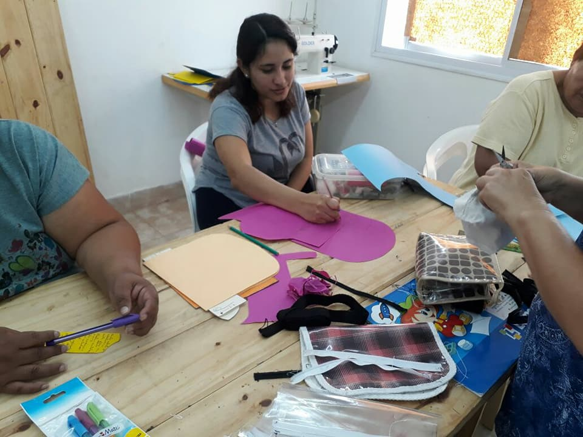
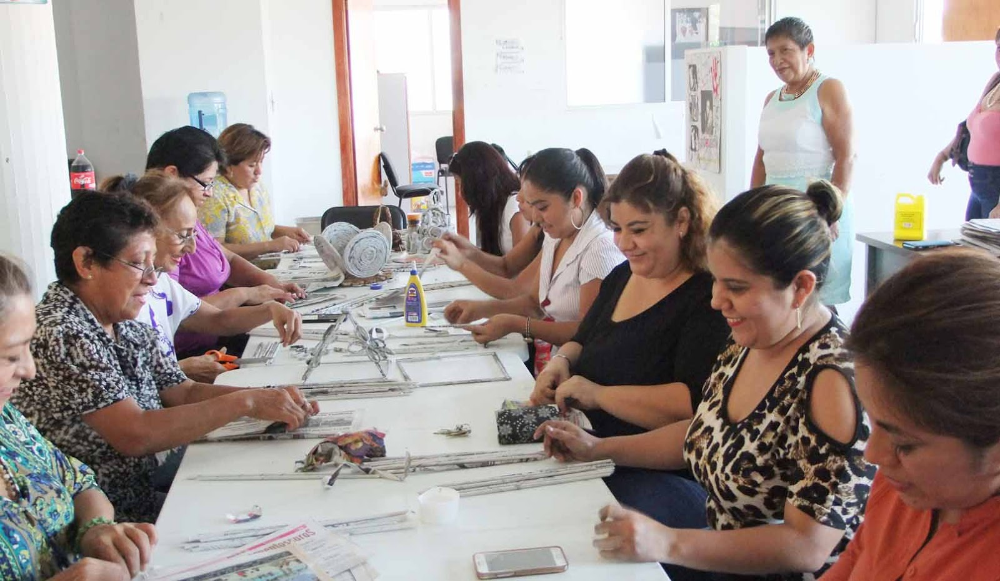
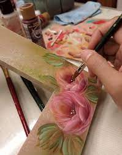
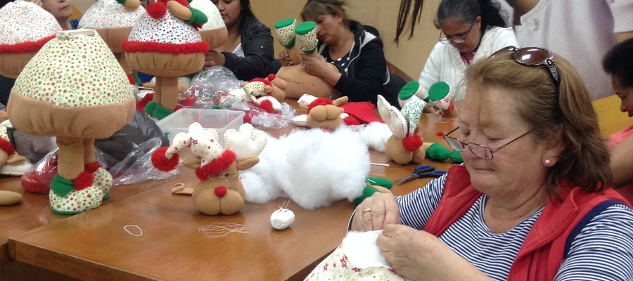
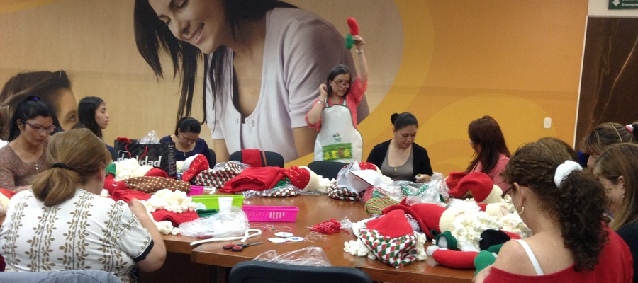

| 1. MANUALIDADES VARIADAS: |  |
Bisutería artesanal. Bonsái con acrílico. Flores con medias panty. |
|
| 2. MANUALIDADES DECORATIVAS: |  |
Cojines con cintas entrelazadas. Cojines decorativos. Jabones y velas artesanales. |
|
| 3. PINTURA DECORATIVA: |  |
Pintura en trupan. Pintura en alto relieve. Pirograbado – pintura en tela. |
|
| 4. CERÁMICA AL FRIO: |  |
Centro de flores y modelado. Decoración de botellas y tejas. Pajareras navideñas. |
|
| 5. MANUALIDADES NAVIDEÑAS: |  |
| Cortineros, adornos y cojines navideños. |